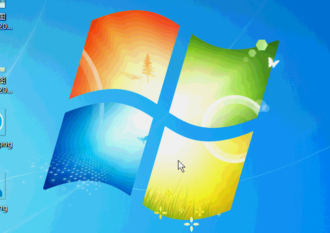

原文连接:https://www.cnblogs.com/lifexy/p/10903081.html
- 简述:QPropertyAnimation (动画类,用来向QObject对象添加动画)
该类的继承框图如下所示:
1.QAbstractAnimation(所有动画的抽象基类)
该抽象类为QPropertyAnimation提供了动画播放,暂停,停止,持续时间,循环周期等抽象函数.
其中常用的成员函数如下所示:
int currentLoop() const //获取当前动画已经循环了几个周期了
int currentTime() const //获取当前动画已经启动了多少时间
void setLoopCount(int loopCount); //设置动画循环次数,默认为1(表示动画运行1次就停止),如果为-1,则表示动画一直循环,直到调用stop()为止.
void setDirection(Direction direction); //设置动画方向,默认为QAbstractAnimation::Forward(表示从起始点到结束点),也可以设置为QAbstractAnimation::Backward.常用信号函数如下所示:
void currentLoopChanged(int currentLoop); //动画运行周期信号函数,当周期进行新的循环时,则会发出这个信号
void finished(); //当动画完成后,则会发出这个信号
void stateChanged(QAbstractAnimation::State newState, QAbstractAnimation::State oldState);
//当动画发生改变(停止/暂停/运行)时,则会发出这个信号, newState表示动画改变后的状态, oldState表示动画改变前的状态
void directionChanged(QAbstractAnimation::Direction newDirection);//当动画发生方向改变时,这会发出这个信号,常用槽函数如下所示:
void pause(); //暂停动画
void resume(); //恢复动画
void setCurrentTime(int msecs); //直接更改当前动画的进度时间,可以通过currentTime()函数来获取改的值
void setPaused(bool paused); //和pause()类似,但是有个参数,如果paused为真则暂停动画,否则就是恢复动画
void start(QAbstractAnimation::DeletionPolicy policy = KeepWhenStopped); //启动动画
//默认参数为KeepWhenStopped,表示停止动画时,保持当前状态
//如果改为DeleteWhenStopped,则表示停止动画时,自动删除
void stop(); //停止动画2.QVariantAnimation (动画的多样类)
该QVariantAnimation类主要是为QPropertyAnimation类提供动画起始结束的位置,方向,运动等机制
该类常用函数如下所示:
void setStartValue(const QVariant &value); //设置动画启动的位置
void setEndValue(const QVariant &value); //设置动画结束的位置
void setDuration(int msecs); //设置动画运行一次需要的时间,单位为毫秒
QEasingCurve easingCurve() const; //返回EasingCurve曲线的设置(EasingCurve:可以设置动画运动曲线的动作)
void setEasingCurve(const QEasingCurve &easing); //设置动画运动时的EasingCurve曲线
void setKeyValueAt(qreal step, const QVariant &value); //设置动画在不同时间帧时所在的位置
//step(0~1): 时间帧,0表示为开始的帧,1表示结束的帧,0.5表示在中间的时间帧
// value:表示对应的step时间帧所在的动画位置(比如设置抖动,则会用到该函数)
QVariant keyValueAt(qreal step) const; //返回step时间帧所在的动画位置该类常用信号函数如下所示:
void valueChanged(const QVariant &value);
//当运行的动画位置在改变时,则会发出这个信号
3.QPropertyAnimation (用来向QObject对象添加动画属性)
该类的构造函数如下所示:
QPropertyAnimation(QObject *target, const QByteArray &propertyName, QObject *parent = Q_NULLPTR); // target:要实现动画的目标对象 // propertyName:动画属性名称 // parent:该动画的父类,一般设为this
4.示例1-界面实现下降动画
效果如下:
PS:由于GIF录制无法录制带阴影的界面,所以将界面阴影屏蔽掉了.
PS:如果动画启动失败,则看看父界面是否布局了.
代码如下:
void loginwindow::initAnimation() //在构造函数里调用该函数
{
DownAnimation = new QPropertyAnimation(this,"geometry",this);
DownAnimation->setDuration(300); //设置动画时间
QDesktopWidget* desktop = qApp->desktop();
DownAnimation->setStartValue(QRect((desktop->width() -this->width())/2,(desktop->height() -this->height())/2,this->width(),0)); //起始位置
DownAnimation->setEndValue(QRect((desktop->width() -this->width())/2,(desktop->height() -this->height())/2,this->width(),this->height())); //结束位置
DownAnimation->start(); //启动动画
}这个我们只是实现单个动画,如果该动画后面还要实现其它动画,则需要信号槽机制来实现.
5.示例2-通过信号槽机制实现多个动画串行运行
启动界面时,通过下降动画结束后,再来继续实现logo向上浮的动画(参考的QQ启动画面)
效果如下所示:

代码如下:
//设置图标
void loginwindow::setIconPix(QLabel *l,const QString & name,QSize size)
{
QPixmap pix(name);
pix = pix.scaled(size,Qt::IgnoreAspectRatio);
l->setPixmap(pix);
l->setFixedSize(size);
}
//初始化动画
void loginwindow::initAnimation()
{
QSize size(110,110);
logo = new QLabel(this);
setIconPix(logo,":logo",size); //设置logo图标
logo->move(this->width()/2-size.width()/2,142);
logo->hide(); //先隐藏
//设置图标上浮动画
LogoAnimation = new QPropertyAnimation(logo,"geometry",this);
LogoAnimation->setDuration(200);
LogoAnimation->setStartValue(QRect(this->width()/2-size.width()/2,142,100,100));
LogoAnimation->setEndValue(QRect(this->width()/2-size.width()/2,107,100,100));
//设置界面下降动画
DownAnimation = new QPropertyAnimation(this,"geometry",this);
DownAnimation->setDuration(300);
QDesktopWidget* desktop = qApp->desktop();
DownAnimation->setStartValue(QRect((desktop->width() -this->width())/2,(desktop->height() -this->height())/2,this->width(),0));
DownAnimation->setEndValue(QRect((desktop->width() -this->width())/2,(desktop->height() -this->height())/2,this->width(),this->height()));
DownAnimation->start();
//连接槽函数
connect(DownAnimation,SIGNAL(finished()),this,SLOT(DownAnimationOnfinished()));
}
//槽函数,用来启动图标上浮动画
void loginwindow::DownAnimationOnfinished()
{
logo->show();
LogoAnimation->start();
}6.示例3-界面关闭时实现居中关闭
效果如下:

PS：GIF录制的帧数不达标,有点延迟.
关闭居中的代码如下:
//初始化动画
void loginwindow::initAnimation()
{
//... ... 省略其它动画初始化
CloseAnimation = new QPropertyAnimation(this,"geometry",this);
CloseAnimation->setDuration(150);
connect(ui->title_close,SIGNAL(clicked()),this,SLOT(CloseAnimationOnStart()));
connect(CloseAnimation,SIGNAL(finished()),this,SLOT(close()));
};
//关闭槽函数,由于界面随时会在任意XY位置,所以需要在关闭时,再来初始化CloseAnimation的起始和结束的动画位置
void loginwindow::CloseAnimationOnStart()
{
CloseAnimation->setStartValue(QRect(this->geometry()));
CloseAnimation->setEndValue(QRect(this->x(),this->y()+this->height()/4-2,this->width(),4));
CloseAnimation->start();
}7.QParallelAnimationGroup并行动画组
该QParallelAnimationGroup类主要是用来封装多个QPropertyAnimation动画类,从而实现并行运行多个动画
来个示例,当我们点击登录按钮时,同时的将logo向下降,并且将stackedWidget登录窗口也向下降,再重新升起stackedWidget下的第二个校验登录窗口.
效果如下:
实现的代码如下:
void loginwindow::initAnimation()
{
QSize logoSize(110,110);
//此处忽略其它动画... ...
//图标下浮动画
LogoDownAnimation = new QPropertyAnimation(logo,"geometry",this);
LogoDownAnimation->setDuration(200);
LogoDownAnimation->setEndValue(QRect(this->width()/2-logoSize.width()/2,160,logoSize.width(),logoSize.height()));
LogoDownAnimation->setStartValue(QRect(this->width()/2-logoSize.width()/2,107,logoSize.width(),logoSize.height()));
//stackedWidget窗口下浮动画
LogoInDownAnimation = new QPropertyAnimation(ui->stackedWidget,"geometry",this);
LogoInDownAnimation->setDuration(400);
LogoInDownAnimation->setStartValue(QRect(0,ui->widget_title->height(),ui->stackedWidget->width(),ui->stackedWidget->height())); //从title界面的高度起点
LogoInDownAnimation->setKeyValueAt(0.6,QRect(0,ui->window->height(),ui->stackedWidget->width(),ui->stackedWidget->height())); //到主界面底部
LogoInDownAnimation->setEndValue(QRect(0,logoSize.height()/2+140,ui->stackedWidget->width(),ui->stackedWidget->height())); //到150的高处
//设置并行动画组
LoginGroup = new QParallelAnimationGroup;
LoginGroup->addAnimation(LogoDownAnimation);
LoginGroup->addAnimation(LogoInDownAnimation);
connect(ui->login,SIGNAL(clicked()),LoginGroup,SLOT(start()));
connect(ui->cancelLogin,SIGNAL(clicked()),LoginGroup,SLOT(start()));
connect(LoginGroup,SIGNAL(finished()),this,SLOT(goCheckorLoginFinished()));
}
void loginwindow::goCheckorLoginFinished()
{
if(LoginGroup->direction() == QAbstractAnimation::Forward)
{
ui->stackedWidget->setCurrentIndex(1);
LoginGroup->setDirection(QAbstractAnimation::Backward);
}
else
{
ui->stackedWidget->setCurrentIndex(0);
LoginGroup->setDirection(QAbstractAnimation::Forward);
}
}
PS:
我们初始化动画时,提供的属性名称为"geometry",表示提供的是界面的XYWH4个值.
当然也有其它名称,比如:
QPropertyAnimation *anima1= new QPropertyAnimation(m_topWidget, "pos"); //设置XY位置 anima1->setDuration(500); anima1->setStartValue(QPoint(0, 0)); //起始时,为0,0位置 anima1->setEndValue(QPoint(0, 100)); //500ms后,为0,100位置 QPropertyAnimation *anima2= new QPropertyAnimation(m_grayWidget, "opacity"); //设置透明度 anima2->setDuration(500); anima2->setStartValue(1); //起始时,为不透明 anima2->setEndValue(0); //500ms后,为透明